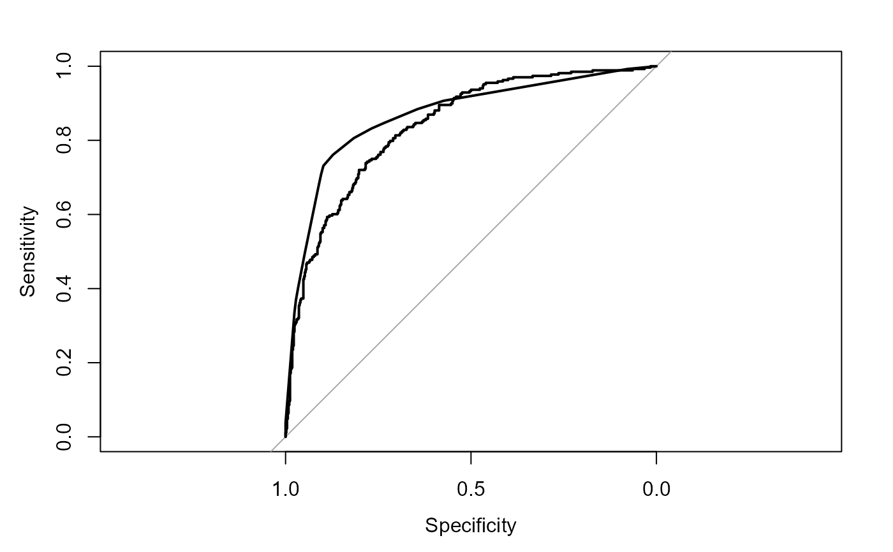

ROC.RdThis is a wrapper to the main function pROC of the pROC package (by Xavier Robin et al.). It builds a ROC curve and returns a "roc" object, a list of class "roc".
ROC(x, resp = NULL, ...)a model object, or the predicted probabilities, when resp is not NULL.
the response
all arguments are passed to roc().
Partial ROC is calculated following Peterson et al. (2008; doi:10.1016/j.ecolmodel.2007.11.008 ). This function is a modification of the PartialROC funcion, available at https://github.com/narayanibarve/ENMGadgets.
A data.frame containing the AUC values and AUC ratios calculated for each iteration.
Peterson, A.T. et al. (2008) Rethinking receiver operating characteristic analysis applications in ecological niche modeling. Ecol. Modell., 213, 63-72.
r.glm <- FitMod(diabetes ~ ., data = d.pima, fitfn="logit")
ROC(r.glm)
#> Setting levels: control = neg, case = pos
#> Setting direction: controls < cases
#>
#> Call:
#> roc.default(response = Response(x), predictor = predict(x, type = "prob")[, 2], plot = FALSE)
#>
#> Data: predict(x, type = "prob")[, 2] in 500 controls (Response(x) neg) < 268 cases (Response(x) pos).
#> Area under the curve: 0.8394
# plot ROC curves for a list of models
r.rp <- FitMod(diabetes ~ ., data = d.pima, fitfn="rpart")
# combine models to a list
mlst <- list(r.glm, r.rp)
# do the plot
for(i in seq_along(mlst))
if(i==1){
plot(ROC(mlst[[i]], grid=TRUE, col=c(hred, hblue)[i]))
} else {
lines(ROC(mlst[[i]], col=c(hred, hblue)[i]))
}
#> Setting levels: control = neg, case = pos
#> Setting direction: controls < cases
#> Setting levels: control = neg, case = pos
#> Setting direction: controls < cases
